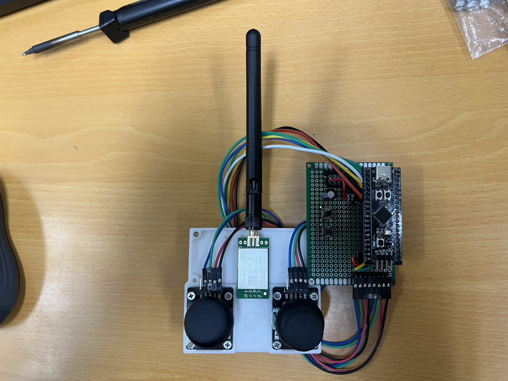
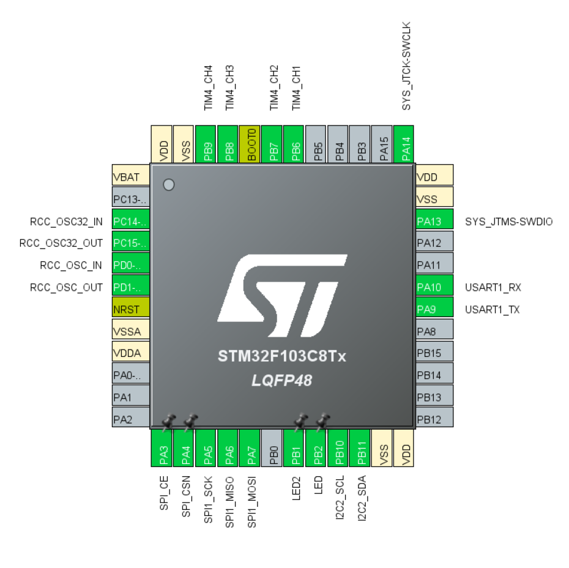

01 · Hardware
硬體平台
自製飛控板以 STM32F103C8T6 為核心，透過 I2C 讀取 MPU6050、SPI 驅動 nRF24L01P、TIM4 四路 PWM 驅動 ESC；操控端是另一個專案的 STM32F411 遙控器。
本頁重點
- MCU 72 MHz；IMU 走 I2C2 400 kHz、無線走 SPI1 9 Mbit/s、ESC 走 TIM4 CH1–4。
- PWM 400 Hz、1 µs 解析度，輸出限制 1100–1940 µs；週期比控制迴圈（6 ms）短。
- 動力配置（A2212 KV980 + 20A ESC + 9450 槳 + 4S）由作者提供，見 README。
1.1系統組成
| 功能 | 元件 | 介面 / 設定 | 依據 |
|---|---|---|---|
| 主控 | STM32F103C8T6（LQFP48） | HSE 8 MHz × PLL 9 = 72 MHz | |
| IMU | MPU6050（6 軸） | I2C2（PB10/PB11），400 kHz | |
| 無線 | nRF24L01P | SPI1（PA5/6/7）、CE PA3、CSN PA4 | |
| 馬達輸出 | ESC × 4 | TIM4 CH1–CH4（PB6–PB9） | |
| 除錯 | USART1 | PA9/PA10，115200 baud | |
| 狀態燈 | LED / LED2 | PB2 / PB1 | |
| 燒錄 | ST-Link | SWD（PA13/PA14） | README |


1.2主控 STM32F103C8T6
Cortex-M3、72 MHz、64 KB Flash / 20 KB SRAM（C8 規格）。專案以 STM32CubeMX 產生 HAL 與 CMSIS-RTOS v2（FreeRTOS）初始化碼，FreeRTOS 系統節拍 1 kHz、heap 3 KB。
- SYSCLK
- 72 MHz（HSE 8 MHz × 9）
- APB1 / 計時器
- 36 MHz；APB1 計時器時脈 72 MHz
- FreeRTOS tick
- 1000 Hz，heap 3072 B
1.3慣性感測器 MPU6050
| 項目 | 設定 | 依據 |
|---|---|---|
| 陀螺儀量程 | ±2000 °/s（16.4 LSB/°/s） | |
| 加速度量程 | ±2 g（16384 LSB/g） | |
| 內部數位低通 | DLPF_CFG = 1（加速度約 184 Hz、陀螺約 188 Hz） | |
| 取樣率 | SMPLRT_DIV = 1（註解標示 500 Hz） | |
| 飛控讀取頻率 | 每 6 ms 讀一次（約 166.7 Hz），不使用 FIFO | |
| 開機零偏校準 | 1000 筆 × 6 ms ≈ 6 秒，需水平靜止、Z 軸朝上 |
推算 感測器以約 500 Hz 更新、飛控以 166.7 Hz 讀取，等於只取每 3 筆中的 1 筆；高於約 83 Hz 的振動可能疊回低頻（混疊）。這是研究延伸中的改善項目之一。
1.4動力系統
| 元件 | 規格（作者提供） |
|---|---|
| 機架 | F450 |
| 馬達 | SunnySky A2212 KV980 × 4 |
| ESC | XRotor 20A 4S BLDC × 4 |
| 槳葉 | 9450 |
| 電池 | 4S、6200 mAh、90C |
1.5PWM 輸出（TIM4）
計時器時脈 72 MHz ÷ (PSC 71 + 1) = 1 MHz → 1 tick = 1 µs
PWM 週期 = (ARR 2499 + 1) × 1 µs = 2.5 ms → 400 Hz
CCR = 脈寬 µs；限幅 1100 – 1940 µs；停機 = 1100 µs
依據
- 推算 控制迴圈每 6 ms 更新一次 CCR，PWM 每 2.5 ms 送出一個脈波，所以同一個指令會重複送出 2–3 個脈波。
ESC_Stop()持續輸出 1100 µs 而非關閉 PWM；實際是否停轉取決於 ESC 油門校準。- 油門 0–1000 線性映射到 1100–1940 µs 。
1.6無線模組 nRF24L01P（飛控端）
| 項目 | 設定 | 依據 |
|---|---|---|
| 角色 | PRX（接收端），管道 0 | |
| 頻道 | 40（2440 MHz） | |
| 速率 / 功率 | 2 Mbps / 0 dBm | |
| CRC / 位址 | 2 B CRC；5 B 位址 | |
| 自動重送 | ARD 500 µs、ARC 5（31 B ACK 所需） | |
| 功能 | 動態酬載長度（DPL）+ ACK Payload | |
| 收包方式 | 輪詢 FIFO_STATUS，未接 IRQ 腳位 |
1.7STM32F411 遙控器

遙控器韌體位於獨立儲存庫 stm32f411-remote-controller（原專案名 F411_remote_hal），不在本 repo 內。本站只依飛控端的解析程式描述它應送出的內容：
- PTX 端，送出 17 B 控制封包（油門、Yaw、Pitch、Roll 各 0–1000）。
- USB 橋接：把電腦的
PID,…/AXIS,…指令轉成 24 B 無線指令，再把 ACK 中的遙測轉成TEL,…文字列。 - 兩端必須同步使用 ARD 500 µs，否則 31 B ACK 收不完整（）。
本 repo 無法確認
- 遙控器的送包頻率、重送與逾時策略、搖桿 ADC 處理。
- 與本飛控相容的遙控器韌體版本 / commit。
1.8腳位配置
| STM32 腳位 | 功能 | 連接 |
|---|---|---|
| PB10 / PB11 | I2C2 SCL / SDA | MPU6050 |
| PA5 / PA6 / PA7 | SPI1 SCK / MISO / MOSI | nRF24L01P |
| PA3 / PA4 | CE / CSN | nRF24L01P |
| PB6 – PB9 | TIM4 CH1 – CH4 | M1 – M4 ESC 訊號 |
| PA9 / PA10 | USART1 TX / RX | 除錯串口 |
| PA13 / PA14 | SWDIO / SWCLK | ST-Link |
| PB1 / PB2 | GPIO | LED2 / LED |

待補的硬體資料
- 電源架構與接線圖（電池 → ESC / BEC → 飛控 3.3 V、nRF24L01P 供電與去耦）。
- 整機重量、推重比、馬達推力測試數據。
- 飛控板電路圖或 PCB 檔（若為洞洞板，建議補接線照片）。
- IMU 減震方式與安裝方向照片（韌體假設 IMU 軸與機體軸一致）。